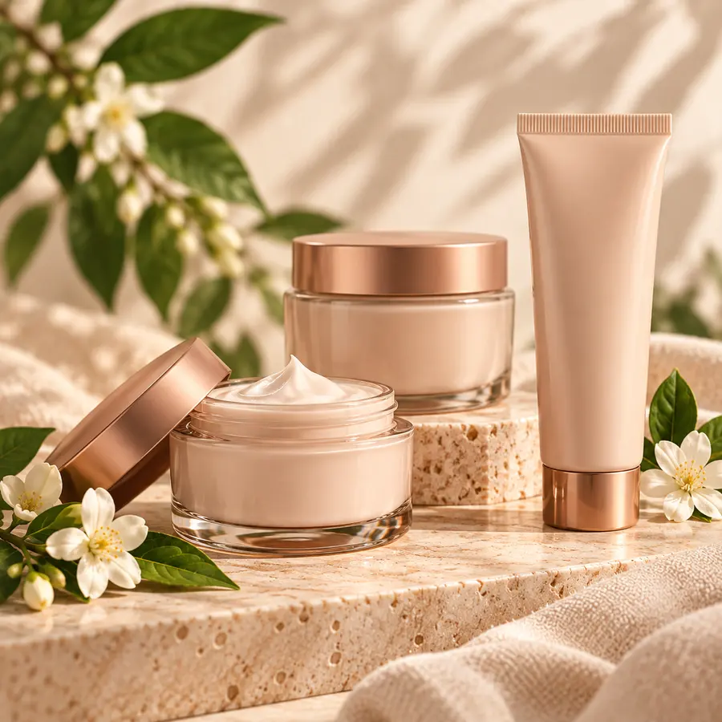
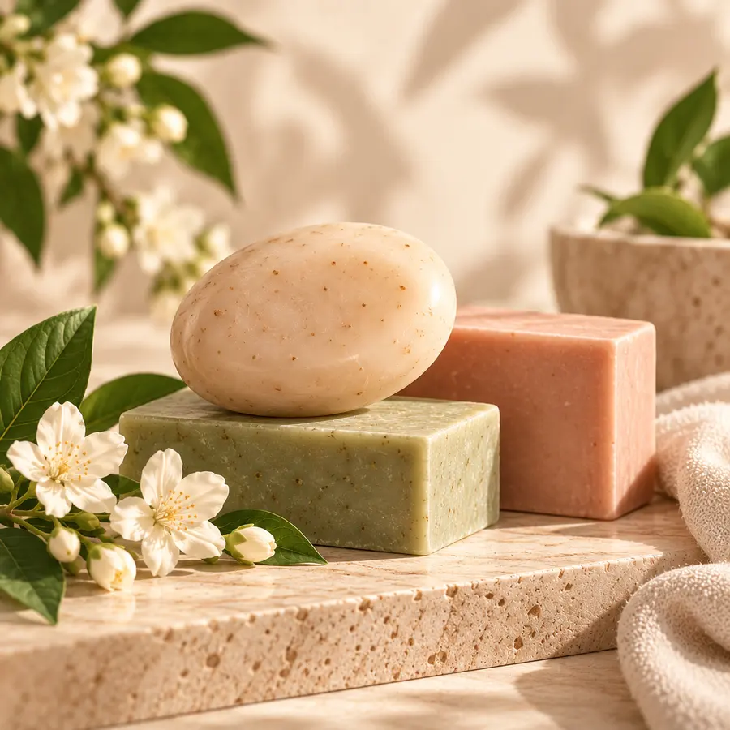

Mais vendido-46%
CORPO & BANHO
Hidratantes, sabonetes e cuidados para o corpo
Hidratantes, óleos, sabonetes e cuidados para transformar o banho em um momento de autocuidado.

EM OFERTA
Destaques de corpo & banho
Mais vendido-60%

Mais vendido-50%Preços conferidos na Natura em 05/10/2026. Imagens ilustrativas. Campanhas, preços e estoque mudam a cada ciclo: confirme a condição exibida na loja antes de finalizar.
DICAS DA DANI
Como escolher
Tipo de pele
Pele mais seca pede hidratação mais nutritiva; pele normal combina com texturas leves de rápida absorção.
Combine a linha
Usar sabonete e hidratante da mesma linha deixa o perfume na pele mais duradouro e harmonioso.
Leve o tamanho certo
Os refis e tamanhos maiores costumam render mais para quem usa todos os dias.
PERGUNTAS FREQUENTES
Dúvidas sobre corpo & banho
Qual hidratante é melhor para pele seca?
Depende da textura e do perfume que você prefere. Fale com a Dani e diga como é sua pele: ela indica as opções disponíveis no ciclo atual.
Existem refis?
Muitas linhas Natura têm refil. A disponibilidade aparece na página de cada produto na loja online.
PRONTA PARA ESCOLHER?
Quer ajuda para escolher?
Conte o que você procura e receba uma indicação da Dani pelo WhatsApp.